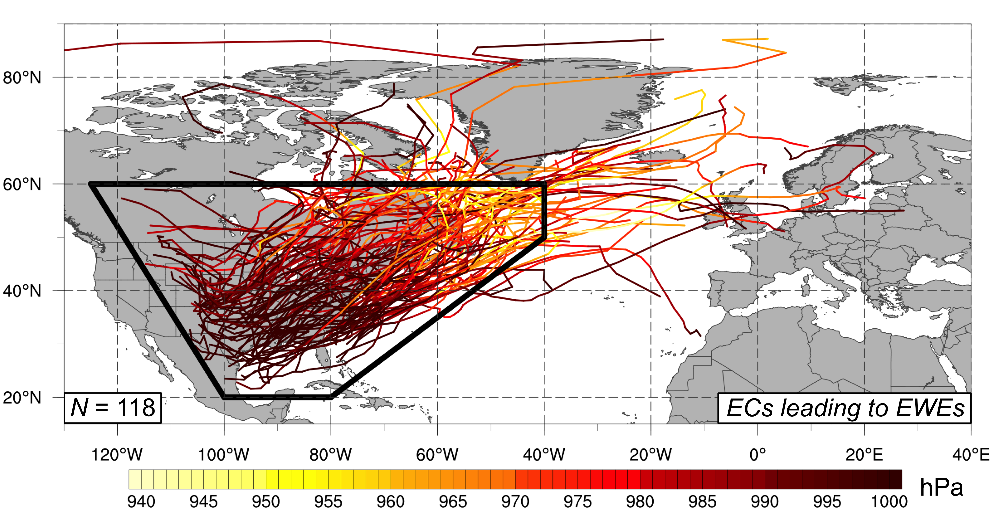
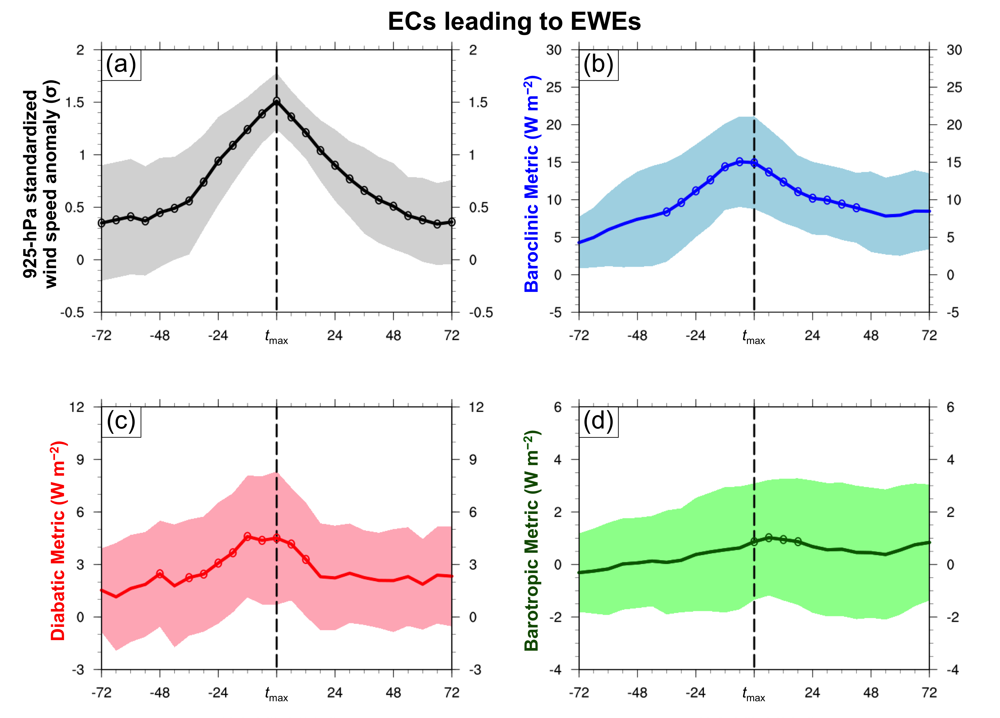

Research support provided by NSF Grant AGS-1355960
 
M.S. Research
"Upper-Tropospheric
Precursors Associated with Subtropical Cyclone
Formation in the North Atlantic Basin"
This
study investigates the roles of baroclinic and diabatic processes during the
evolution of subtropical cyclones (STCs) by calculating three potential vorticity (PV)
metrics from the 0.5° NCEP CFSR
dataset. The three PV
metrics quantify the relative contributions of lower-tropospheric baroclinic
processes, midtropospheric diabatic heating, and upper-tropospheric dynamical
processes during the evolution of individual cyclones. Quantification of these three contributions
reveals the changing PV structure of an individual cyclone, indicates
fluctuations in the dominant energy source of the cyclone, and aids in
categorizing the cyclone.
Research support provided by NSF Grant AGS-0935830
Bolinger, R. A., V. M. Brown, C. M. Fuhrmann, K. L.
Gleason, T. A. Joyner, B. D. Keim, A. Lewis, J. W. Nielsen-Gammon, C. J.
Stiles, W. Tollefson, H. E. Attard, and A. M. Bentley, 2022: An
assessment of the extremes and impacts of the February 2021 south-central U.S. arctic
outbreak, and how climate services can help. Wea. and Climate Extremes, 36, 100461, https://doi.org/10.1016/j.wace.2022.100461.
Bentley, A. M., L. F. Bosart, and D. Keyser, 2019: A climatology of extratropical cyclones leading to extreme weather events over central and eastern North America. Mon. Wea. Rev., 147, 1471-1490, https://doi.org/10.1175/MWR-D-18-0453.1.
Bentley, A. M., L. F. Bosart, and D. Keyser, 2017: Upper-tropospheric precursors to the formation of
subtropical cyclones that undergo tropical transition in the North Atlantic
basin. Mon. Wea. Rev., 145, 503-520, https://doi.org/10.1175/MWR-D-16-0263.1.
Bentley, A. M., D. Keyser, and L. F. Bosart, 2016: A dynamically based climatology of
subtropical cyclones that undergo tropical transition in the North Atlantic
basin. Mon. Wea. Rev., 144, 2049-2068, https://doi.org/10.1175/MWR-D-15-0251.1.
Bentley, A. M., and N. D. Metz, 2016: Tropical transition of an unnamed, high-latitude,
tropical cyclone over the eastern North Pacific. Mon. Wea. Rev., 144, 713-736, https://doi.org/10.1175/MWR-D-15-0213.1.
Laird, N., A. M. Bentley,
S. Ganetis, A. Stieneke, and S. A. Tushaus, 2016: Climatology of lake-effect
precipitation events over Lake Tahoe and Pyramid Lake. J. Appl. Meteor.
Climatol., 55, 297-312, https://doi.org/10.1175/JAMC-D-14-0230.1.
Back to Top